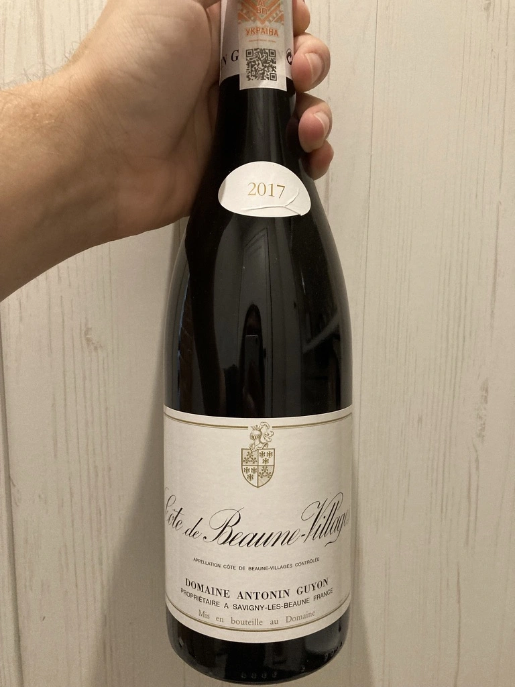

- Type
- Red Still, Dry
- Producer
- Domaine Antonin Guyon
- Vintage
- 2017
- Location
- France, Côte de Beaune-Villages AOC
- Grapes
- Pinot Noir
- Alcohol
- 13.5
- Sugar
- 1.7
- Price
- 916 UAH
- Cellar
- 1 bottle
Ratings
There are no ratings of this wine yet. It’s waiting for the right moment, which could be today, tomorrow or even in a year. Or maybe, I am drinking it at this moment… So stay tuned!